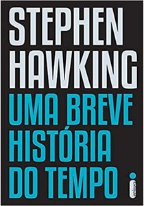
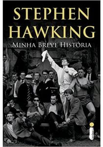
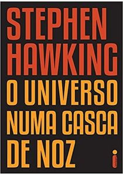
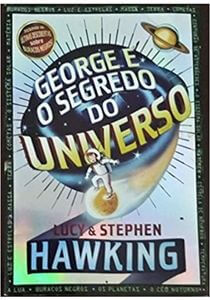
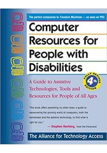
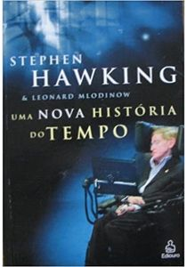
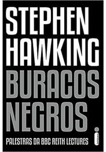
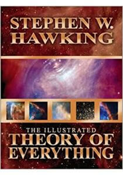
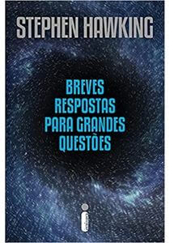

- Uma breve história do tempo
- Stephen Hawking
Biografia
Stephen Hawking nasceu em 8 de janeiro de 1942 em Oxford, Inglaterra, em meio a segunda guerra mundial. Filho de Frank e Isobel Hawking, era o mais velho dos quatro filhos do casal. No início da sua vida acadêmica era considerado um bom aluno, mas nada de excepcional. Seu pai, que era médico, queria que seu filho mais velho estudasse medicina. No entanto, Hawking desde cedo apresentava aptidão para as ciências. Aos 17 anos foi admitido na Universidade de Oxford,para estudar Ciências Naturais com ênfase em Física, se formando em 1962. No mesmo ano foi fazer doutorado em Cosmologia na Universidade de Cambridge. Lá conheceu Jane Wilde, com quem se casou 2 anos mais tarde. Stephen Hawking morreu no dia 14 de março de 2018, aos 76 anos de idade. Leia mais...
Livros


- Minha breve história
- Stephen Hawking

- O universo numa casca de noz
- Stephen Hawking

- George e o segredo do universo
- Stephen Hawking

- Computer resources for people
with disabilities - Stephen Hawking

- Uma nova história do tempo
- Stephen Hawking

- Buracos negros
- Stephen Hawking

- A teoria de tudo
- Stephen Hawking

- Breves respostas
para grandes questões - Stephen Hawking
Prêmios, títulos, medalhas e homenagens
1970-1980
- 1975 – Medalha Eddington
- 1976 – Medalha Hughes
- 1979 – Medalha Albert Einstein
- 1982 – Ordem do Império Britânico (Comandante)
- 1985 – Medalha de Ouro da Royal Astronomical Society
1990-2016
- 1986 – Membro da Pontifícia Academia das Ciências
- 1988 – Prêmio em Física da Fundação Wolf
- 1989 – Prêmio "Príncipe das Astúrias" da Concórdia (contribuição à paz, entendimento, etc.)
- 1989 – Título de "Companheiro de Honra", da Rainha Elizabeth II
- 1999 - Prêmio "Julius Edgar Lilienfeld" da Sociedade Americana de Física
1990-2016
- 2003 – Prêmio "Michelson Morley" da Case Western Reserve University
- 2006 – Medalha Copley da Royal Society
- 2009 – Medalha Presidencial da Liberdade
- 2013 – Fundamental Physics Prize
- 2016 – Professor Honorário do Instituto de Astrofísica das Canárias

{kind=link}